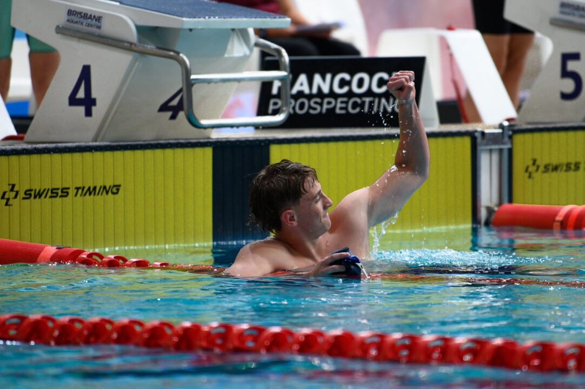
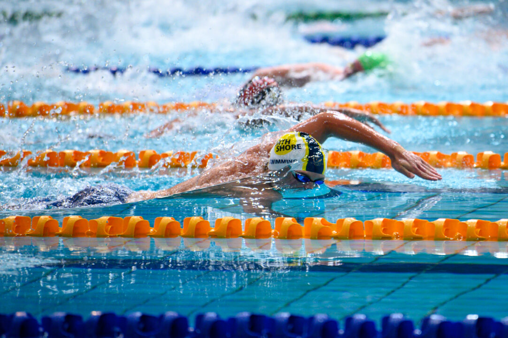

Grayson
Coulter
Success worth remembering.
The numbers below reflect the current supplied and updated New Zealand age-group record set. They are not a prediction and they are not a target - they are simply a record of what has already happened.
More records worth remembering
10Queensland All-ComersView individual records ↓
| Age | Event | Time | Swum |
|---|---|---|---|
| 12y | 100 Fly LCM | 58.52 | 2024-12-16 |
| 12y | 100 Free LCM | 53.25 | 2024-12-18 |
| 12y | 200 Free LCM | 1:54.40 | 2024-12-15 |
| 12y | 200 IM LCM | 2:11.16 | 2024-12-16 |
| 12y | 50 Free LCM | 24.52 | 2024-12-17 |
| 13y | 100 Free LCM | 51.63 | 2025-12-14 |
| 13y | 200 Free LCM | 1:52.13 | 2025-12-18 |
| 13y | 200 IM LCM | 2:09.69 | 2025-12-15 |
| 13y | 400 Free LCM | 3:59.40 | 2025-12-17 |
| 13y | 50 Fly LCM | 26.17 | 2025-12-18 |
3Australian All-ComersView individual records ↓
| Age | Event | Time | Swum |
|---|---|---|---|
| 13y | 100 Free LCM | 51.63 | 2025-12-14 |
| 13y | 200 Free LCM | 1:52.13 | 2025-12-18 |
| 13y | 400 Free LCM | 3:59.40 | 2025-12-17 |
3World best times*View individual records ↓
| Age | Event | Time | Swum |
|---|---|---|---|
| 12y | 200 Free LCM | 1:54.40 | 2024-12-15 |
| 12y | 50 Free LCM | 24.52 | 2024-12-17 |
| 13y | 200 Free LCM | 1:52.13 | 2025-12-18 |
Overlapping achievements: the same swim may count in several categories. These are additional record categories, not additional NZ age-group records. *International age bests are from a privately compiled listing, not official World Aquatics records. Review source books before altering totals; last verification dates are stored in the update CSV.
Three ways to look back.
NZ record book
Who holds the most age-group records, and which records stand furthest ahead of the next-fastest swimmer.
Progression against the best
Compare age-based trajectories with leading male swimmers from recent generations.
Consistency
Measure how often performances have stayed close to the established progression path since 2024.
Moments worth remembering.
From early races to national and international meets — a few highlights from the years already enjoyed. Select a photo to see it larger, or the play tile to open race commentary.
 NZ Short Course Championships · 2026
NZ Short Course Championships · 2026 AIMS Games · 2024
AIMS Games · 2024 National age-group championships · 2025
National age-group championships · 2025 Butterfly · 2025
Butterfly · 2025 Junior Pan Pacific Championships · 2026
Junior Pan Pacific Championships · 2026 First New Zealand cap · 2026
First New Zealand cap · 2026 NZ Secondary Schools · 2025
NZ Secondary Schools · 2025 NZ Short Course mixed relay · 2025
NZ Short Course mixed relay · 2025
First sub-4 min 400m Free · QLD Champs 2025
Freestyle breakout · QLD Champs 2025